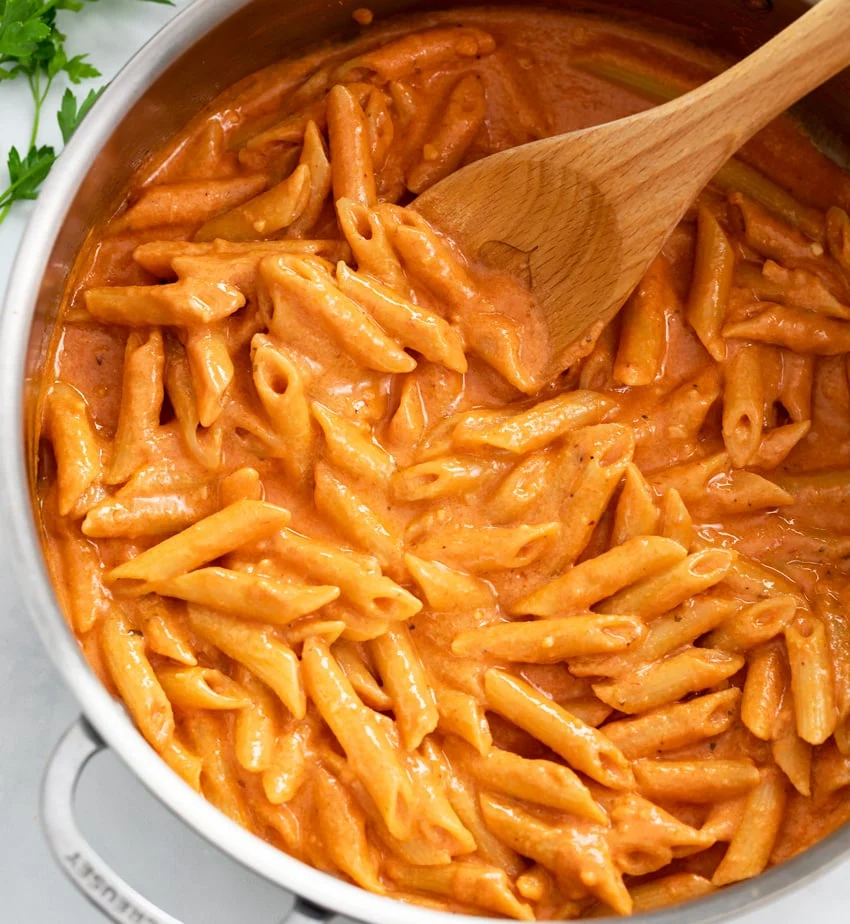

Pink Sauce Pasta

Description
An acidic, cheesy concoction for your favorite pasta shape. Comes together in less than 15 minutes.
Ingredients
- Favorite dry pasta shape
- Favorite tomato sauce
- Favorite alfredo sauce
- Parmasean cheese
Steps
- Add 240 grams of dry pasta to a pan.
- Cover pasta with water.
- Salt the pasta and stir. Heat on medium and wait for it to begin bubbling.
- Start a timer for your pasta's package recommendation for al dente, minus about ~3 minutes. If it's your first time cooking with this method, subtract more time than you'd expect.
- Mix together 2 parts tomato sauce to 1 part alfredo sauce (150 grams tomato sauce to 75 grams alfredo sauce)
- When timer goes off, check pasta for doneness. Add more time if needed.
- Drain some water out of pan. Leave enough pasta water in pan to barely coat the bottom.
- Set heat to low and pour in sauce mixture. Stir until sauce thickens.